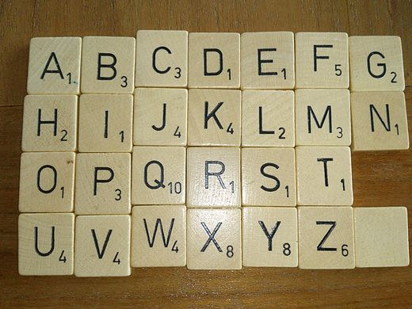

Feest met functies#
Naam |
Beschrijving |
|---|---|
Onderwerp |
Recursieve functies |
Bestandsnaam |
|
Inleveren |
Lever jouw bestand met de juiste bestandsnaam in op GradeScope |
In deze opgave ga je een aantal functies uitwerken door middel van recursie.
Een begin#
Maak een nieuw tekstbestand aan met behulp van VSCode of een andere tekstverwerker. Je kan de onderstaande code gebruiken als begin:
def leng(s):
"""leng returns the length of s
Argument: s, which can be a string or list
"""
if s == '' or s == []: # als lege string of lege lijst
return 0
else:
return 1 + leng(s[1:])
In de bovenstaande code zie je de functie leng die we al eerder hebben behandeld en je terug kan vinden in de voorbeelden van recursie. Het bestand ga je verder aanvullen met functies die je in deze opgave gaat uitwerken.
Recursie toepassen#
In deze opgave moeten de functies mult, dot, ind, scrabble_score en transcribe worden uitgewerkt met behulp van recursie. Gebruik de functies power, mymax, leng en vwl die je al eerder hebt gezien (en terug kan vinden in de voorbeelden van recursie) als basis voor het ontwerp van jouw functies.
Recursie visualiseren#
Je kan Python Tutor gebruiken om beter inzicht te verkrijgen in hoe recursie werkt. Let op, om de aanroep van de functie in Python Tutor te visualiseren moet je de recursieve functie definiëren (schrijven) én de functie ook aanroepen, bijvoorbeeld direct onder de functie.
Hier is een voorbeeld die je in Python Tutor kan gebruiken en uitproberen (ook deze functie kan je terugvinden in de voorbeelden van recursie):
def mylen(s):
if s == "":
return 0
else:
return 1 + mylen(s[1:])
test = mylen("hoi")
print("test is", test)
Docstrings#
Zorg er ook voor dat voor elke functie een docstring wordt opgenomen die aangeeft wat de argumenten van de functie betekenen en wat de returnwaarde ervan is, d.w.z. wat de functie doet. Hier is een voorbeeld van een docstring voor de functie mult die je verder ook als sjabloon voor de andere functies die je gaat uitwerken kan gebruiken:
def mult(n, m):
"""mult returns the product of its two arguments
Arguments: n and m are both integers
Return value: the result of multiplying n and m
"""
... # jouw code komt hier (de body)
Let op dat de docstring op hetzelfde niveau moet worden ingesprongen als de body (de hoofdtekst) van de functie, Python doet hier anders heel moeilijk over!
docstrings
Waarom docstrings schrijven? Code wordt vaker gelezen dan geschreven en het is een manier om “aantekeningen” voor jezelf te maken maar ook voor anderen die jouw code misschien ooit gaan lezen!
Er zijn verschillende manieren om Python docstrings te schrijven en hier zijn geen harde regels voor … Bijvoorbeeld, Google heeft een geheel eigen syntax en stijl opgesteld waar docstrings aan moeten voldoen.
We moeten dus een keus maken hoe we docstrings vormgeven: de syntax die wij gebruiken is een conventie (afspraak) die ook in andere grotere Python projecten en gereedschappen wordt gebruikt, bijvoorbeeld PyCharm en Sphinx.
Testen#
Test jouw functies! Het is héél verleidelijk om een functie te schrijven en verder aan te nemen dat alles werkt, maar tot je hebt getest weet je niet zeker of alles in orde is! Kleine (of grote!) fouten zijn snel gemaakt en kunnen ervoor zorgen dat de code niet kan worden uitgevoerd (syntax fouten) of een resultaat geeft dat jij niet zo hebt bedoeld (functionele fouten) …
Voor de opdrachten geven we jou een aantal tests die je aan jouw uitwerkingen kan toevoegen. Als je vervolgens jouw bestand uitvoert worden de tests ook uitgevoerd en kan je (visueel, in ieder geval) controleren of er tests zijn die niet werken.
Hier is een voorbeeld dat je al eerder hebt gezien, de functie flipside(s). Plak dit in jouw bestand en voer het uit:
def flipside(s):
"""flipside swaps s's sides
Argument s: a string
"""
x = len(s) // 2
return s[x:] + s[:x]
#
# Tests
#
assert flipside("zijkant") == "kantzij"
assert flipside("huiswerk") == "werkhuis"
assert flipside("flipside") == "sideflip"
assert flipside("az") == "za"
assert flipside("a") == "a"
assert flipside("") == ""
Assertions
Het assert keyword staat voor een aanname. Je vraagt hier Python om bijvoorbeeld aan te nemen dat de returnwaarde van de functie flipside(s) waar de parameter s een waarde “zijkant” heeft gelijk is aan de string “kantzij”. Als dit niet het geval is zal Python het programma beëindigen met een AssertionError die jou zal vertellen welke assert statement niet is geslaagd.
Als het goed zal je niets bijzonders aan de uitvoer zien, alle assertions zullen in het bovenstaande voorbeeld slagen. Maar wijzig de laatste assertion in bijvoorbeeld het volgende en voer het bestand nogmaals uit en je zult zien dat Python jou laat weten dat iets niet correct is:
assert flipside("") == "ergfout"
Opgaven#
mult(n, m)#
De functie mult(n, m) moet het product (de vermenigvuldiging) van de twee gehele getallen n en m als resultaat teruggeven. Omdat het een beetje te gemakkelijk zou zijn om de vermenigvuldigingsoperator * te gebruiken mag je alleen maar gebruik maken van +, - (om negatieve getallen te maken), in combinatie met recursie. Gebruik de power functie die eerder is behandeld als voorbeeld. Een mogelijke uitvoer kan zijn:
In [1]: mult(6, 7)
Out[1]: 42
In [2]: mult(6, -3)
Out[2]: -18
Hier zijn een aantal tests die je voor deze functie kan gebruiken:
assert mult(6, 7) == 42
assert mult(6, -7) == -42
assert mult(-6, 7) == -42
assert mult(-6, -7) == 42
assert mult(6, 0) == 0
assert mult(0, 7) == 0
assert mult(0, 0) == 0
dot(L, k)#
De functie dot(L, k) moet het inwendig product (inproduct of dot product) van de lijsten L en k teruggeven. Als de twee lijsten niet even lang zijn, moet dot de waarde 0.0 teruggeven. Als de lijsten beide leeg zijn, moet dot ook 0.0 teruggeven. Je mag ervan uitgaan dat de lijsten alleen maar getallen bevatten en je mag de vermenigvuldigingsoperator * gebruiken bij deze opgave!
Inwendig product (inproduct)
Wat is het inproduct? Het inproduct van twee lijsten (die in deze context dan vectoren genoemd worden) is de som van de producten van de elementen die op dezelfde positie staan in de twee vectoren. Bijvoorbeeld, het inproduct van de lijsten [5, 3] en [6, 4] zal 5 * 6 plus 3 * 4 zijn wat gelijk staat aan 42.
Je kan deze opdracht vergelijken met het voorbeeld mylen dat eerder is besproken, maar houd er rekening mee dat je nu te maken hebt met twee lijsten en geen strings! In de voorbeelden van recursie is de functie leng een beetje aangepast zodat het zowel lijsten als strings kan verwerken!
Een mogelijke uitvoer kan je hier zien. Let op dat het resultaat steeds een decimaal getal is en niet een heel getal, dit kan je bereiken door een floating point getal in de base case te gebruiken.
In [1]: dot([5, 3], [6, 4])
Out[1]: 42.0
In [2]: dot([1, 2, 3, 4], [10, 100, 1000, 10000])
Out[2]: 43210.0
In [3]: dot([5, 3], [6])
Out[3]: 0.0
Hier zie je een aantal tests die je voor de functie dot kan gebruiken:
#
# Tests
#
assert dot([5, 3], [6, 4]) == 42.0
assert dot([1, 2, 3, 4], [10, 100, 1000, 10000]) == 43210.0
assert dot([5, 3], [6]) == 0.0
assert dot([], [6]) == 0.0
assert dot([], []) == 0.0
ind(e, L)#
Schrijf de functie ind(e, L), die een sequentie L en een element e accepteert. L kan een string of een lijst zijn.
De functie ind moet de positie of index teruggeven waarop e voor het eerst voorkomt in L. De index begint bij 0, zoals gebruikelijk bij lijsten. Als e geen element van L is, dan moet ind(e, L) een integer teruggeven die gelijk is aan len(L). Je mag hier de Python functie index niet gebruiken. Hier zijn een paar voorbeelden van mogelijke uitvoer:
In [1]: ind(42, [55, 77, 42, 12, 42, 100])
Out[1]: 2
In [2]: ind(42, list(range(0, 100)))
Out[2]: 42
In [3]: ind('hoi', ['hallo', 42, True])
Out[3]: 3
In [4]: ind('hoi', ['oh', 'hoi', 'daar'])
Out[4]: 1
In [5]: ind('i', 'team') # er is geen i in team!
Out[5]: 4
In [6]: ind(' ', 'nader onderzoek')
Out[6]: 5
Let op, in het laatste voorbeeld is het eerste argument van ind een string met een enkele spatie en niet een lege string!
Controleren of een element voorkomt
Je kan controleren of een element in een sequentie voorkomt met het keyword in
if e in L:
Op een vergelijkbare manier kan je ook kijken of een element niet in een sequentie voorkomt met
if e not in L:
De syntax in en not in voor het controleren of een element zich wel of niet in een sequentie bevindt is in het geval van ind erg handig!
De functie ind lijkt net als dot vermoedelijk het meeste op het voorbeeld leng in de voorbeelden van recursie.
Hier zijn een aantal tests die je voor deze functie kan gebruiken:
#
# Tests
#
assert ind(42, [55, 77, 42, 12, 42, 100]) == 2
assert ind(42, list(range(0, 100))) == 42
assert ind("hoi", ["hallo", 42, True]) == 3
assert ind("hoi", ["oh", "hoi", "daar"]) == 1
assert ind("i", "team") == 4
assert ind(" ", "nader onderzoek") == 5
letter_score(let)#
De functie letter_score(let) krijgt één argument mee, een string met een enkele letter en geeft de waarde van deze letter op de Scrabble tegel terug. Als het argument niet een letter van 'a' tot en met 'z' is moet de functie 0 teruggeven.
Let op, letter_score heeft geen recursie nodig. Je hebt recursie wel nodig in de volgende opgave scrabble_score(s) …
Om deze functie te schrijven heb je onderstaande waardes van de Scrabble tegels nodig.

Betekent dit dat je 25 of 26 if, elif of else statements moet gaan schrijven? Nee! Gebruik in plaats daarvan het keyword in zoals je deze ook hebt gebruikt in de functie ind(e, L):
In [1]: 'a' in 'deze string bevat een a'
Out[1]: True
In [2]: 'q' in 'deze string bevat de letter voor de r niet'
Out[2]: False
OK! … maar hoe helpt dit in het vereenvoudigen van de oplossing? Denk hier aan het gebruik van een conditioneel statement, bijvoorbeeld:
if let in "xy":
return 8
Hier zijn een paar voorbeelden van letter_score:
In [1]: letter_score('w')
Out[1]: 4
In [2]: letter_score('%')
Out[2]: 0
Schrijf nu zelf een aantal tests voor letter_score, de functie zal ook worden ook getest als onderdeel van de volgende functie! Test wel de functie letter_score afzonderlijk anders zal de functie scrabble_score je flink wat problemen kunnen geven!
scrabble_score(s)#
scrabble_score moet een string s meekrijgen, die alleen maar kleine letters bevat, en de Scrabble score van de string teruggeeft. Je mag negeren dat in het echte spel sommige tegels maar beperkt beschikbaar zijn.
letter_score
Gebruik de functie letter_score die je eerder hebt uitgewerkt en pas recursie toe. Vergelijk dit met het voorbeeld vwl dat eerder is besproken, maar bedenk dat je verschillende waardes moet toevoegen voor elke letter. Zie de voorbeelden van recursie voor de functie vwl.
Hier zijn een paar voorbeelden:
In [1]: scrabble_score('quotums')
Out[1]: 24
In [2]: scrabble_score('jacquet')
Out[2]: 24
In [3]: scrabble_score('pyjama')
Out[3]: 20
Hier zijn de tests die je kan gebruiken:
#
# Tests
#
assert scrabble_score("quotums") == 24
assert scrabble_score("jacquet") == 24
assert scrabble_score("pyjama") == 20
assert scrabble_score("abcdefghijklmnopqrstuvwxyz") == 84
assert scrabble_score("?!@#$%^&*()") == 0
assert scrabble_score("") == 0
transcribe(s)#
In een bijzonder moleculair proces dat transcriptie wordt genoemd creëren jouw cellen boodschapper-RNA moleculen die de volgorde van de nucleotiden in jouw DNA weerspiegelen. Het RNA wordt dan gebruikt om eiwitten te creëren die het werk van de cel doen, zie verder transcriptie van DNA naar RNA voor meer informatie over dit biologisch wonder!
Schrijf een recursieve functie transcribe(s), die een string s als argument accepteert die DNA-nucleotiden bevat. Dit zijn de hoofdletters A, C, G en T.
Er kunnen ook andere karakters voorkomen in de string, maar die moeten door de functie transcribe worden genegeerd en verdwijnen uit het resultaat (dit zouden spaties of andere tekens kunnen zijn die geen DNA-nucleotide voorstellen).
transcribe moet het boodschapper-RNA teruggeven dat geproduceerd zou worden van de string s. De correcte waarde kan gevonden worden door de onderstaande vervangingen toe te passen:
A’s in het argument wordenU’s in het resultaat.C’s in het argument wordenG’s in het resultaat.G’s in het argument wordenC’s in het resultaat.T’s in het argument wordenA’s in het resultaat.Andere tekens in de invoer moeten helemaal verdwijnen uit het resultaat.
Net zoals in de vorige opgave is het handig om te beginnen met een hulpfunctie die een enkele nucleotide omzet. Je kan deze code gebruiken als begin voor deze hulpfunctie:
def one_dna_to_rna(c):
"""Converts a single-character c from DNA nucleotide
to complementary RNA nucleotide
"""
if c == 'A':
return 'U'
# vul verder aan met andere vervangingsregels ...
Je kan het voorbeeld vwl in de voorbeelden van recursie aanpassen, maar let op dat je nu strings moet samenvoegen in plaats van getallen op te tellen!
Hier zijn een paar voorbeelden van transcribe:
In [1]: transcribe('ACGT TGCA') # spaties moeten worden verwijderd
Out[1]: 'UGCAACGU'
In [2]: transcribe('GATTACA')
Out[2]: 'CUAAUGU'
In [3]: transcribe('hallo') # kleine letters tellen niet
Out[3]: ''
Let op, een veel voorkomende fout is dat one_dna_to_rna geen else statement bevat om ongeldige tekens af te vangen. Aangezien alle niet-nucleotide karakters moeten worden weggelaten, kan dit worden opgelost door het volgende als aanvulling op te nemen zodat alle mogelijke condities worden afgehandeld:
else:
return "" # lege string als het geen geldige nucleotide is
Let op dat de else hierboven in de functie one_dna_to_rna moet worden gebruikt, en niet in transcribe!
Hier zijn de tests die je kan gebruiken:
#
# Tests
#
assert transcribe('ACGTTGCA') == 'UGCAACGU'
assert transcribe('ACG TGCA') == 'UGCACGU' # De spatie verdwijnt
assert transcribe('GATTACA') == 'CUAAUGU'
assert transcribe('hanze') == '' # Andere tekens verdwijnen
assert transcribe('') == ''
Extra opgaven#
In deze opgaven laten we je CodingBat zien, een heel handige site waar je kan oefenen met Python functies. Verder is er een (niet eenvoudige!) uitdaging om strings naar “potjeslatijn” te vertalen…
Er zijn drie bonusopgaven:
Oefenen op CodingBat met Python-strings
Oefenen op CodingBat met Python-lijsten
Een functie schrijven om tekst om te zetten naar potjeslatijn (ook met strings)
CodingBat
Maak een account aan op CodingBat zodat je voor jezelf kan bijhouden welke opgaven je al wel of niet hebt gemaakt. Voor alle CodingBat opgaven geldt een onbeperkt aantal pogingen, dat wil zeggen dat je ze zo vaak mag maken als je wilt.
CodingBat en Python strings#
Maak alle Python string opgaven op de CodingBat String-1 pagina. Je kan deze opgaven zo vaak maken als je wilt.
CodingBat en Python lists#
Maak alle Python list opgaven op de CodingBat List-1 pagina. Je kan deze opgaven zo vaak maken als je wilt.
Potjeslatijn#
In deze opgave ga je twee functies schrijven die een vertaling kunnen maken van Nederlands naar potjeslatijn. Dit probleem is gebaseerd op Google Pig Latin[1]:

Zorg ervoor dat je de functies de juiste namen geeft en zorgvuldig test. Neem in elke functie een docstring op, die moet aangeven wat de functie berekent (teruggeeft) en wat de argumenten zijn en wat ze betekenen.
Opwarmen#
Schrijf de functie piglet_latin(s) die een string s als argument accepteert. s is een enkel woord dat bestaat uit kleine letters.
piglet_latin moet dan de vertaling van s in potjes-Latijn teruggeven volgens de volgende drie regels:
Als het argument helemaal geen letters heeft (de lege string) moet de functie een lege string teruggeven
Als het argument begint met een klinker wordt in Pig Latin gewoon de string
'hee'toegevoegd aan het eind. De'y'telt in ons geval als medeklinker en niet als klinker.Voorbeeld:
piglet_latin('aap')geeft'aaphee'terugAls het argument begint met een medeklinker, is het resultaat van potjes-Latijn identiek aan het argument, behalve dat de oorspronkelijke medeklinker van het argument aan het eind van het woord staat in plaats van aan het begin en het wordt gevolgd door de string
'ee'.Voorbeeld:
piglet_latin('noot')geeft'ootnee'terug
Vergeet niet om tests te schrijven met assert! Dit is nog niet de complete versie van potjes-Latijn, omdat woorden die beginnen met meerdere medeklinkers nog niet goed verwerkt worden, Zo geeft piglet_latin('straat') bijvoorbeeld 'traatsee' terug.
De echte uitdaging#
Schrijf een functie pig_latin(s) die de bovenstaande regels volgt en ook meer dan één eerste medeklinker correct behandelt in de vertaling naar potjes-Latijn. Dat wil zeggen dat pig_latin alle eerste medeklinkers naar het einde van het woord verplaatst alvorens 'ee' toe te voegen. (Het kan handig zijn om hier een hulpfunctie voor te gebruiken, zie de hint hieronder).
Ook moet pig_latin een eerste 'y' als medeklinker of als klinker behandelen, afhankelijk van de vraag of de y gevolgd wordt door een klinker, respectievelijk een medeklinker. Bijvoorbeeld, 'yoghurt' heeft een initiële y die als medeklinker fungeert. Het woord 'ypsilon' heeft echter een y in het begin die als klinker telt. Hier zijn enkele aanvullende voorbeelden:
In [1]: pig_latin('straat')
Out[1]: 'aatstree'
In [2]: pig_latin('ypsilon')
Out[2]: 'ypsilonhee'
In [3]: pig_latin('yoghurt')
Out[3]: 'oghurtyee'
Tests? Die mag je zelf schrijven!
Hoe recursie te gebruiken
Eén manier om recursie te gebruiken bij het uitwerken van deze functie is om een hulpfunctie
def initial_consonants(s):
...
te schrijven die een string teruggeeft met alle medeklinkers aan het begin van de string s. Als s dus start met een klinker moet de lege string '' worden teruggegeven.
Als je verder over dit probleem gaat nadenken zul je merken dat niet alle mogelijke gevallen worden afgehandeld (de zogenaamde edge cases, of randgevallen). Je mag zelf bepalen hoe je deze situaties uitwerkt, ze zullen in ieder geval niet door ons worden getest …
Eelvee uccessee!